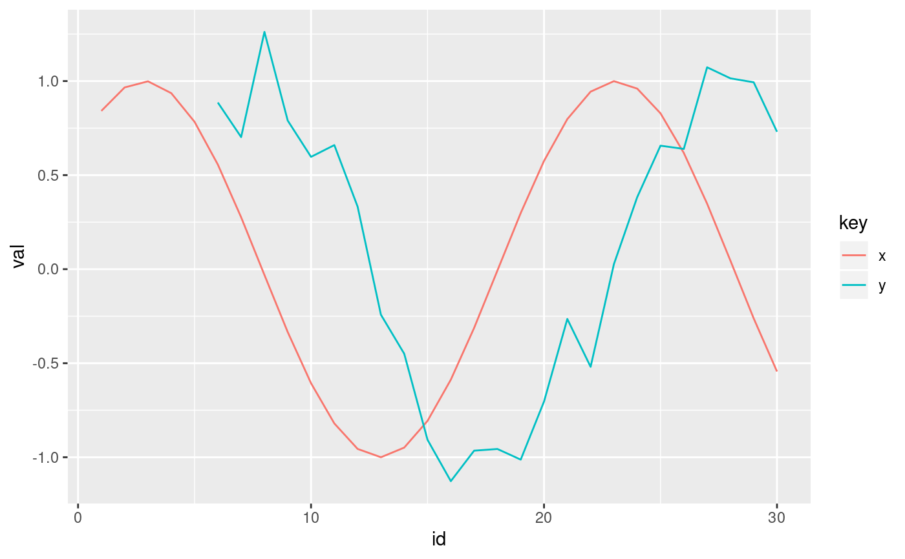
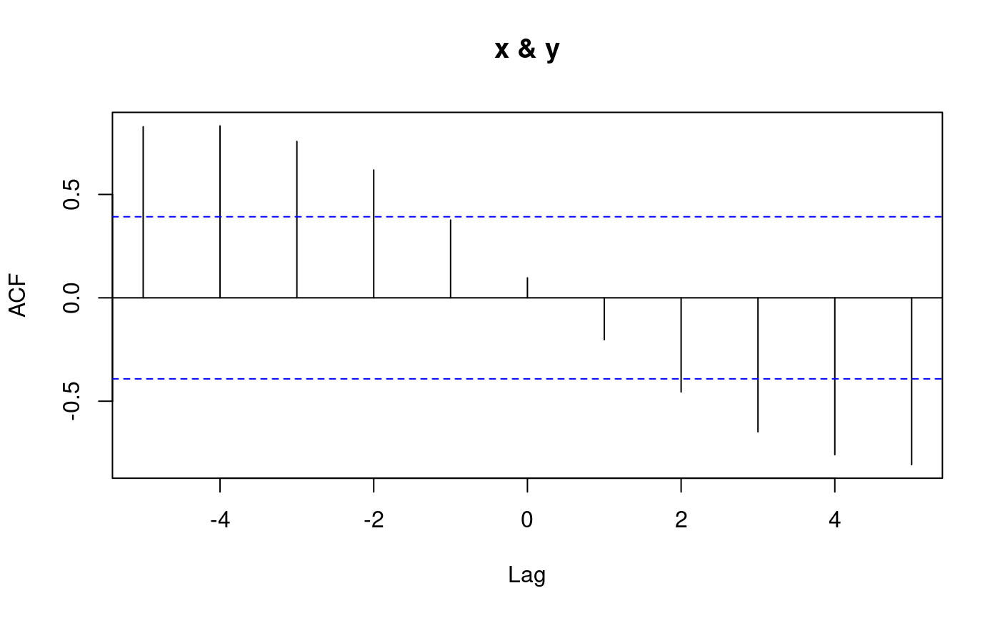

Finds the lag that maximizes the absolute correlation between two time series x and y.
find_lag(x, y, lag.max = as.integer(length(x)/2))
Arguments
| x | time series x |
|---|---|
| y | time series y |
| lag.max | the maximum number of lags to investigate which defaults to the integer value of length(x)/2. |
Value
an integer representign the optimal lag to apply to x
Examples
library(tibble) library(ggplot2) library(tidyr) library(dplyr) x <- sin(seq(1, 10, length.out = 30)) y <- lag(x, 5) + rnorm(length(x), 0, 0.2) testdf <- tibble(id = seq_along(x), x, y) ggplot(gather(testdf, key, val, -id), aes(y = val, x = id, color = key)) + geom_line()#> Warning: Removed 5 row(s) containing missing values (geom_path).#> Error: Problem with `mutate()` input `z`. #> ✖ `n` must be a nonnegative integer scalar, not a double vector of length 1. #> ℹ Input `z` is `lag(x, find_lag(x, y))`.#> Warning: Removed 5 row(s) containing missing values (geom_path).